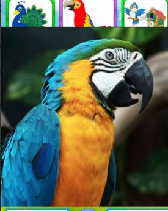

Robô para Recreação
Robô iluminado para festas

Referência
A empresa paulista robotron oferece uma experiência diferenciada aos anfitriões e convidados.
Isso graças ao grandioso robô iluminado, que interage na pista de dança disparando CO2, laser
e leds dando um efeito incrível para entreter crianças e adultos.
País: Brasil
Ano: 2021
Empresa: Robotron.
O robô de brinquedo que ensina crianças a programar


Referência
O Codie é um brinquedo totalmente personalizável que, conectado ao smartphone, pode ser
transformado a partir de comandos ditados pela criança. Usando uma linguagem de programação
lúdica e uma interface bastante simples, a criança pode experimentar na prática os efeitos de
cada comando
País: Hungria
Ano: 2015
Empresa: Codie
Aplicação Recreativa
Sons de Animais
Referência
Um aplicativo que mostra imagens e sons divertidos de animais, feito para crianças de todas as idades como intuito de entreter e educar. a ideia que pode ser desenvolvida a partir desse app, é mostrar o som para a criança e pedir para ela adivinhar qual animal emite esse som.
Scratch jr.


Referência
O Scratch Jr é uma linguagem de programação que permite que crianças (com 5 ou mais anos) criem as suas próprias estórias e jogos interativos. As crianças encaixam blocos de programação gráficos para fazerem atores andar, saltar, dançar e cantar. As crianças podem modificar os atores no editor de pintura, adicionar as suas próprias vozes e sons, e até inserir fotografias de si próprios – e depois usar os blocos de programação para dar vida aos seus atores.